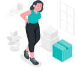
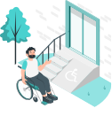

Чем опасна грыжа и как её вовремя обнаружить?

у 80% населения
к 30 годам развивается
межпозвоночная грыжа

40% не подозревает
о своем опасном диагнозе
20% пациентов сделают операцию

На 3-ем месте
костно-мышечные поражения среди причин инвалидности